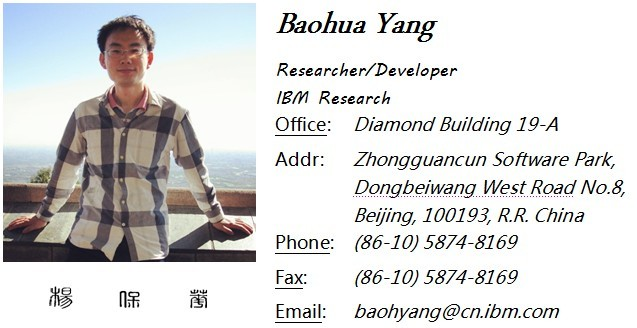

|  | |
||
|
|
Baohua
Yang received his Ph.D. and BS degrees at
Tsinghua University, in the year 2013 and 2007 respectively.
Currently, he is working on datacenter and SDE related technologies at
IBM Research. He has been an IEEE & IEEE Communications
Society Member, and PC/TPC/reviewer for numbers of international
conferences and journals.
Baohua Yang's research interests mainly include
algorithmic optimization, security and performance issues in computer
networking and architectures, specially on data center architecture and
future network management technologies. His recent projects are based
on OpenStack and SDN (OpenFlow, OpenvSwitch, etc.). More infomation
could be found at the Research
page.
His curriculum Vitae is available
in both English and Chinese, and a GPG public key is also
provided. Also, you can find him at linkedin.
What happens recently? Check my personal status.